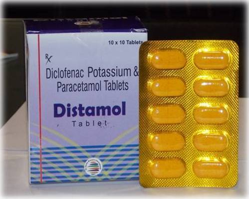

We provide high quality and dependable products for our clients, hospitals, healthcare providers and patients. We have been at the forefront for years for the provision of quality and authentic healthcare services to our customers and these services has earned us good
working relationship with many health and allied institutions.
Part of our core values is to promote a good working relationship between our company, the employees and the community in which we work. Kindly check out our product column to see our various pharmaceutical products.
You can place your Order here and it will be delivered to your door step
Our Products are classified into four main categories:
Painkillers
Effects of Painkillers
Long-term painkiller abuse can lead to serious cardiovascular issues, heart attacks and heart disease. Your Stomach: Stomach and intestinal issues can arise even after a day or two of taking painkillers. Painkiller abuse can lead to constipation, bloating, abdominal distention, bowel obstructions and hemorrhoids
Anti-depressants

Effects of Anti-depressants
The real-world effect of using antidepressant medications does not continue to improve patients’ HRQoL over time. Future studies should not only focus on the short-term effect of pharmacotherapy, it should rather investigate the long-term impact of pharmacological and non-pharmacological interventions on these patients
Stimulants

Effects of Stimulants
Stimulants raise alertness, wakefulness, and energy levels. They also raise blood pressure and heart rate. Strong stimulants like cocaine and methamphetamine produce a powerful sense of wellbeing and euphoria which can be very addicting. Over time, stimulant abuse can cause physical and psychological dependence. Many people turn to stimulants as a way to improve their performance. Unfortunately, instead of improving their life, it can create more problems.
Hallucinogens

Effects of Hallucinogens
Hallucinogens are drugs that cause users to have altered experiences when under their influence. They are classified in two ways: as classic hallucinogens and as dissociative drugs, per the National Institute on Drug Abuse. They may distort reality and cause users to feel like they are seeing, hearing, or even touching things that aren’t really there. Hallucinogens have been popular in the club scene and among youths and college-aged individuals for many years. They are abused most often by individuals who are interested in partying or experimentation, but addiction to hallucinogens is entirely possible. As tolerance takes hold and the dose of the drug needed to get high increases, addiction is already forming.